Chapters
Personal Project
LoRA Messenger
I started this project with the goal of learning how to use the ESP32 Microcontroller. with the help of youtube and ChatGPT, I created "Brolocator" a device that allows you to send messages over long distances without internet. It can also perform crude Full-Duplex 2-Way Voice transmissions within range of ESP-NOW.
Demo Video
Functionality
- Use LoRA for long distance messaging - 2-Way Voice communication when in range of ESP-NOW - Powered off of rechargeable LiPo batteries - 2 Displays cuz its cool - A mode for range testing - Decent & simple to use UI
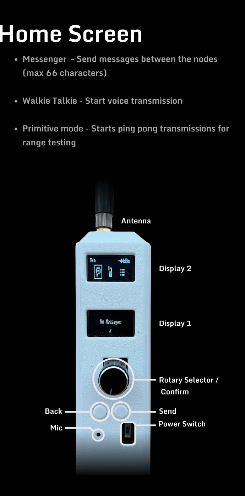
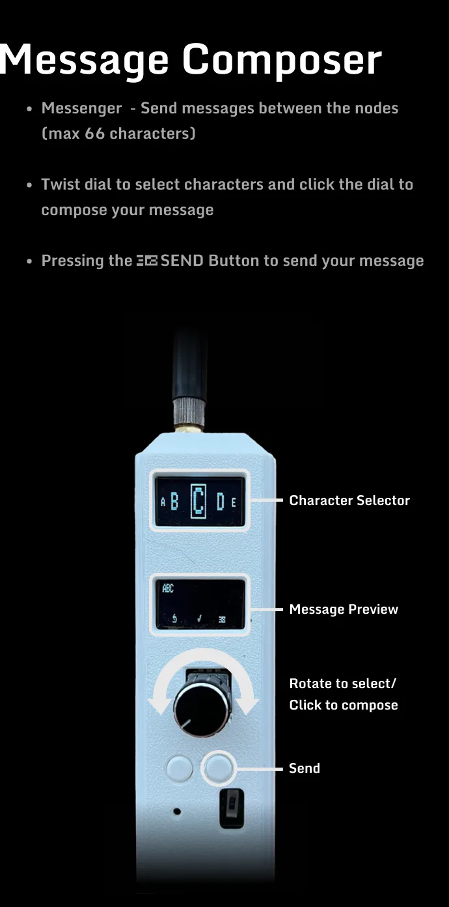
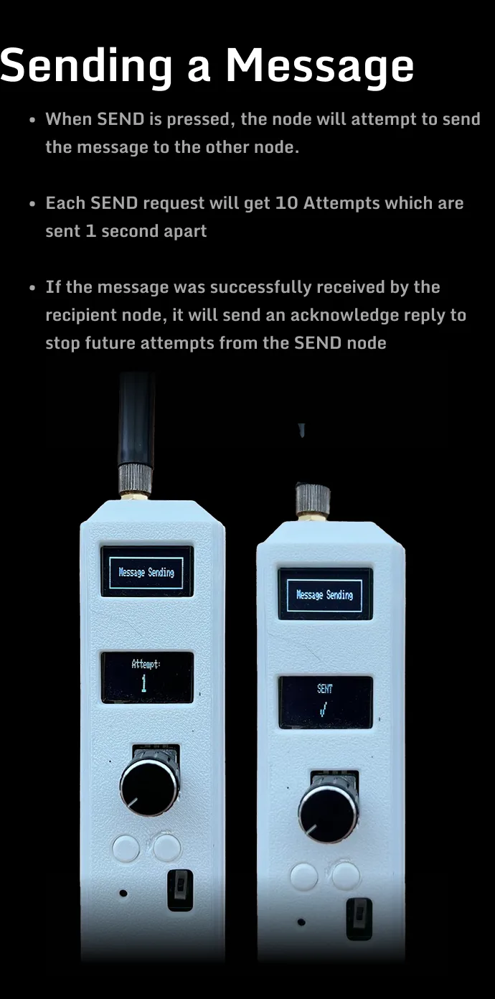
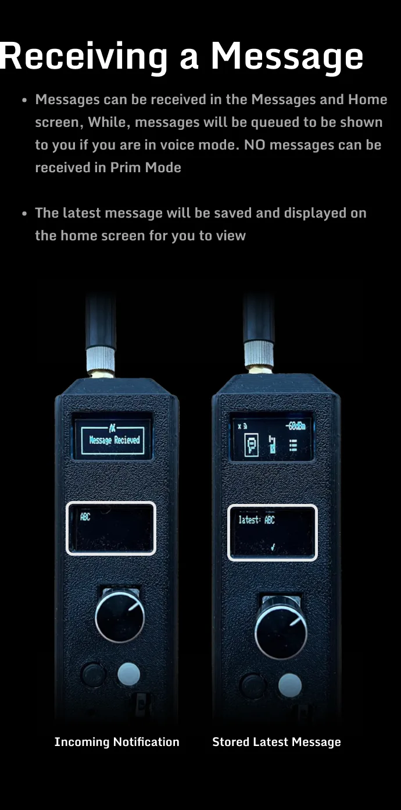

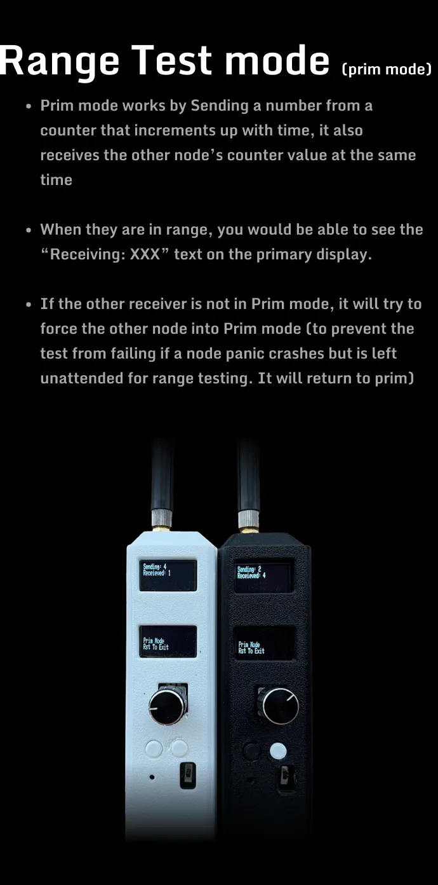
Project Development
Brolocator is my first deep dive into the microcontrollers, it was also my first attempt at designing a PCB. I used PlatformIO to code the ESP32, and with some help from Youtube and ChatGPT, I was able to learn how use each component to create the Brolocator.
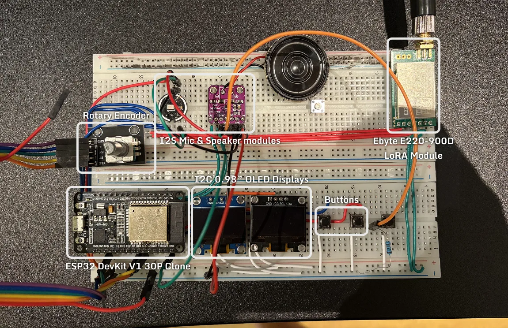
Developement of the BrolocatorCoding
Based on my research, PlatformIO was the best coice for developing code for the ESP32. You can download the PlatfornIO Project HERE
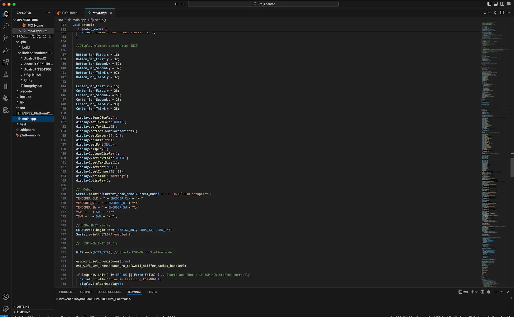
PCB Design
I used KiCAD to design a PCB for all the components to go on. You can download the KiCAD files HERE
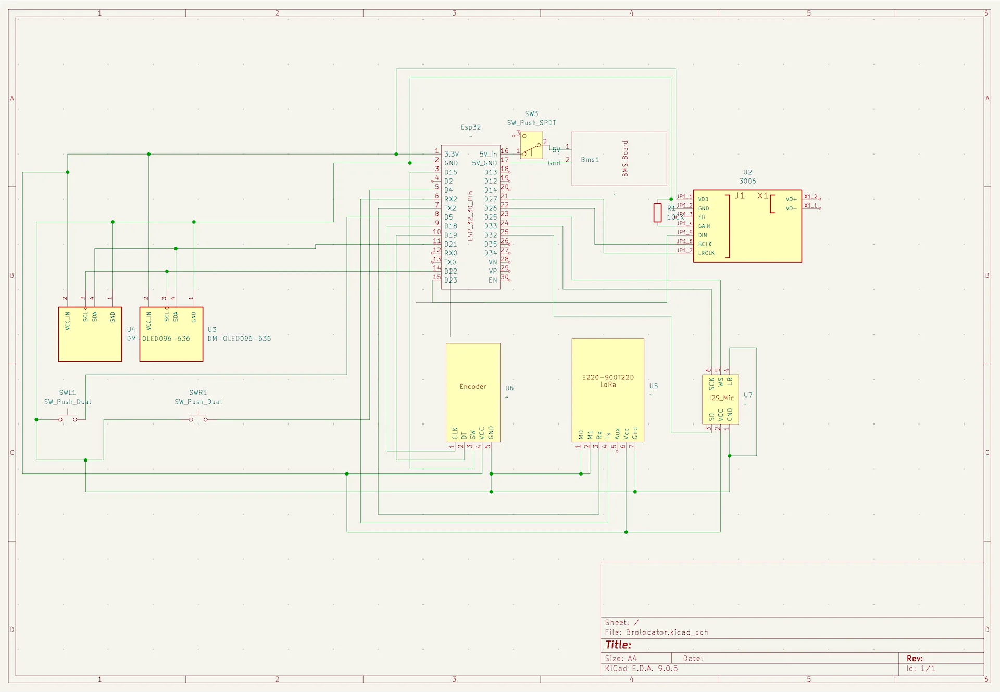
Schematic Board
Board
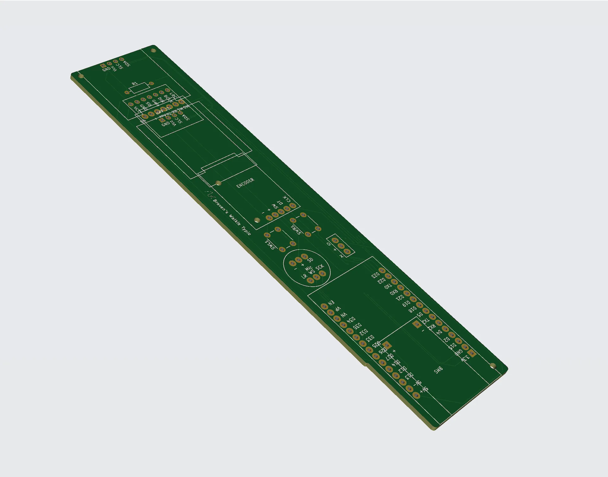
3D Design
I used Onshape to design a Case for the board. You can get the files HERE
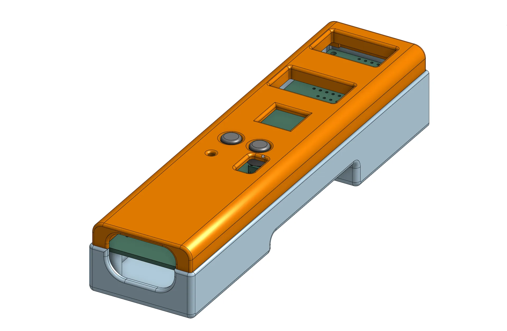
3D model of the Brolocator case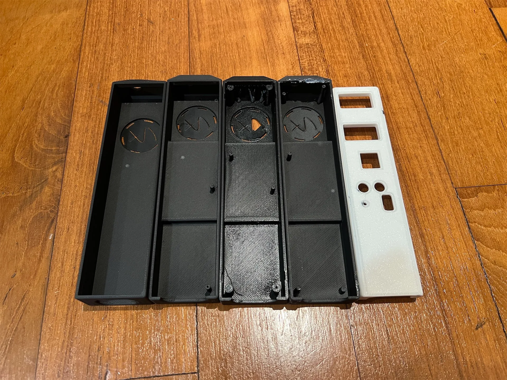
Design iterations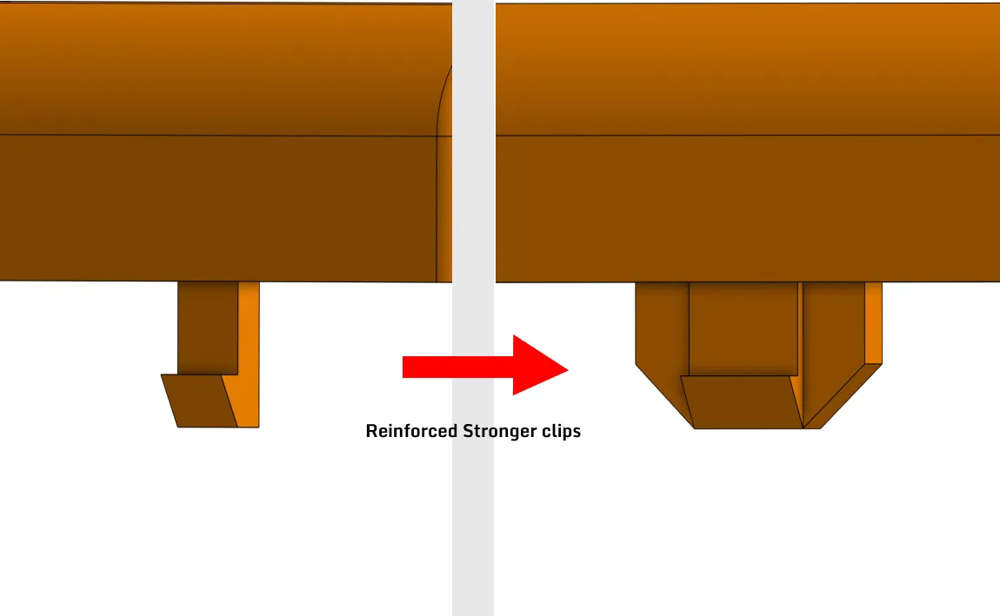
Learning from design failuresAssembly
Assembly of all components together
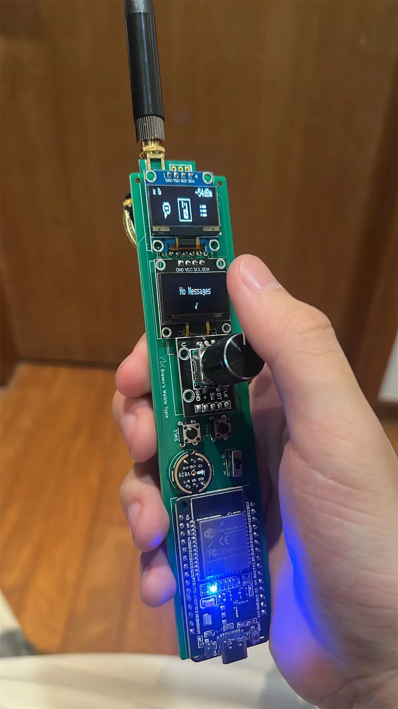
All components soldert to the PCB and working Fitting PCB into case
Fitting PCB into case
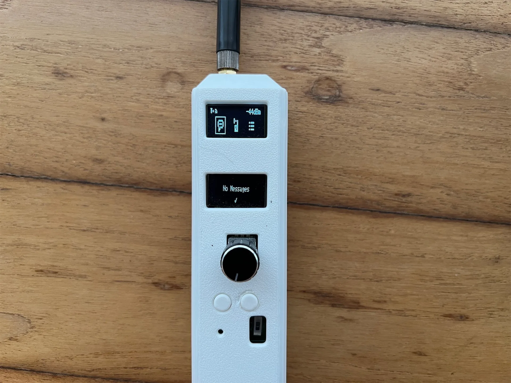
Complete